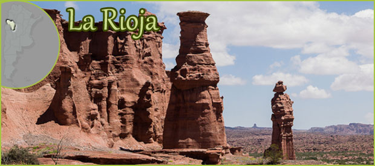
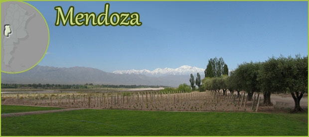
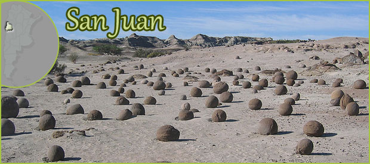
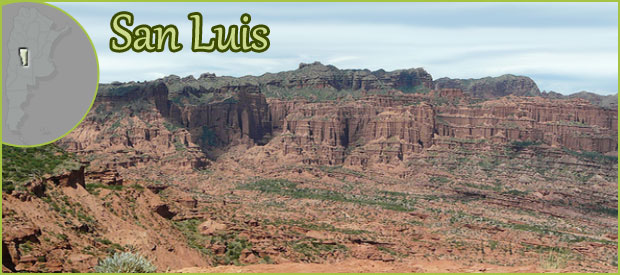

Principales Actividades Turísticas
Volver

Cañon de Talampaya
Mototurismo en La Rioja
Reserva Natural Laguna Brava
Cristo del Portezuelo

Las Leñas
Ruta del Vino
Parque Provincial Aconcagua
Excursiones en San Rafael

Parque Nacional Ischigualasto, Valle de la luna
Ciudad de San Juan
Windsurf y Kitesurf en San Juan
Parque Nacional "El Leoncito"

Villa de Merlo en San Luis
Termas de San Jerónimo
Paseos por "La Carolina", pueblo minoría
Excursiones en "Carpinería", San Luis